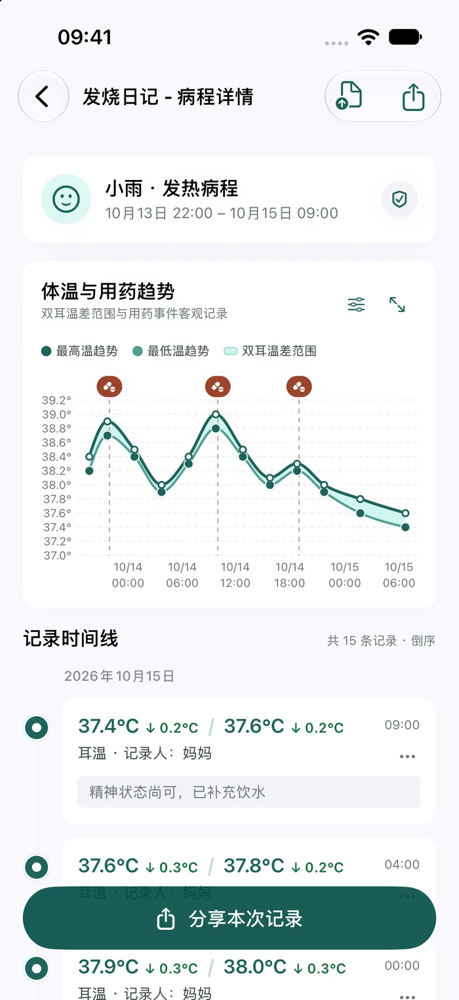
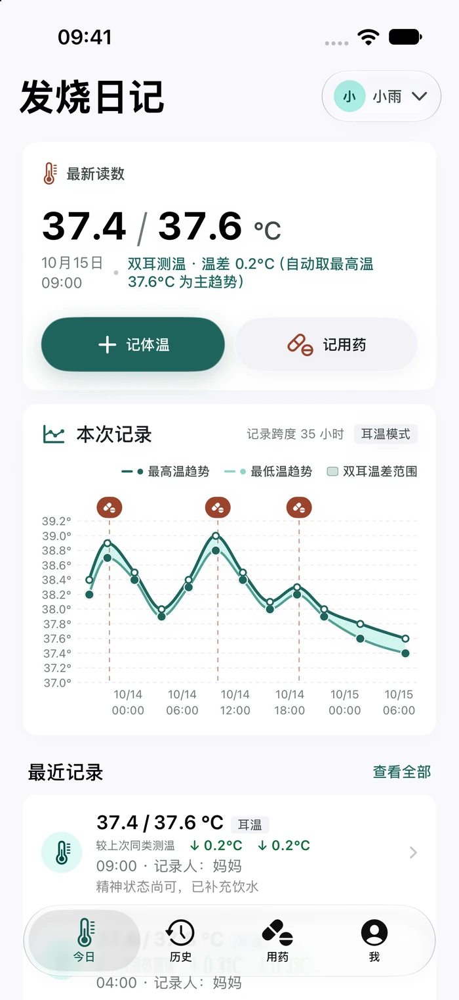
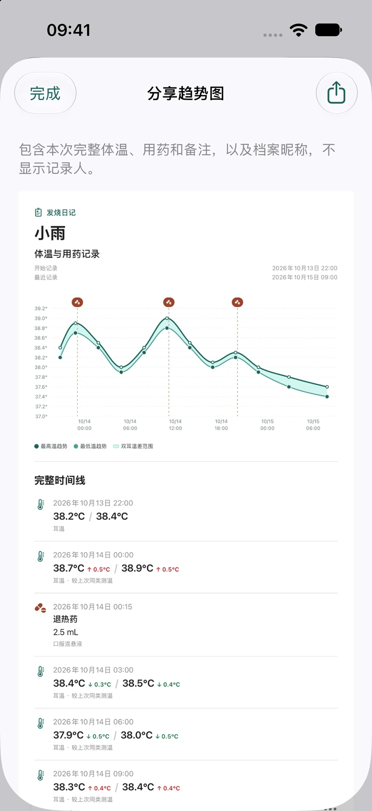
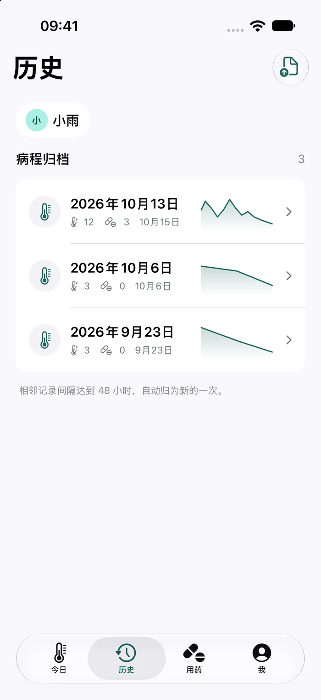
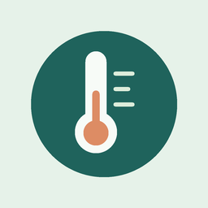

记录日常
先照顾好自己。
体温与服药，集中记录。少一点在备忘录和聊天记录之间翻找。
FEVER DIARY · 为认真照顾的人而做
体温、用药与备注，放进同一条时间线。
从一次测温，到完整的照顾经过。
iPhone 与 iPad · iOS 17 或更新版本


记录清楚，照顾从容
忙着照顾的时候，让记录简单一些。
想回顾的时候，让细节清晰一些。
手动记录耳温或腋温，选择常用药预设，调整实际剂量与时间。需要补记时，也能回到过去的时间点。
体温和用药放在同一张趋势图上，按记录间隔整理每次病程。缩放时间轴，或横屏查看更多细节。
每一种照顾，都有迹可循
记录、回顾、分享。
把一段照顾，整理得更清楚。
记录日常
体温与服药，集中记录。少一点在备忘录和聊天记录之间翻找。

回顾与导出
一张趋势图，一份 PDF，或一张 CSV 表格。按需要整理，再由你选择保存和分享。

家人共同记录
高级版可建立多份档案，并通过 iCloud 邀请家人共同记录选定的档案。
家庭协作的每位参与者均需高级版；iCloud 同步可能存在延迟。
无需注册应用专用账号。
只邀请你信任的家人。
文件在设备上生成。
简单的选择
需要照顾更多家人时，再解锁高级版。
一个人的记录，也值得认真对待。
一份个人档案
为更多家人，留一份专属记录。
中国区 · 一次性买断
无自动续费。家庭协作的每位参与者均需高级版。实际价格以所在地区 App Store 购买确认页为准。
免费版支持一份个人档案，体温、用药、完整历史、趋势图分享以及 PDF 和 CSV 导出均可使用。高级版用于解锁多档案和家庭协作。
本机使用无需注册应用专用账号，也不必开启 iCloud。需要跨设备同步或家庭协作时，再登录系统 iCloud 并启用相关功能。
升级高级版后，可以通过 iCloud 邀请家人加入选定的档案。每位参与者均需高级版。同步可能存在延迟，不适合用于实时监护。共享权限说明见隐私政策。
发烧日记是一款手动记录工具，不连接测温设备，不进行实时监护，也不提供诊断、服药时间或剂量建议。常用药预设由你输入。

发烧日记，陪你把细节留在身边。
通过审核后开放下载。支持 iPhone 与 iPad，免费开始使用。
需要帮助？联系我们